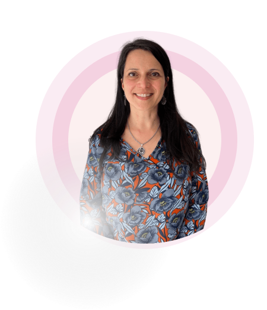
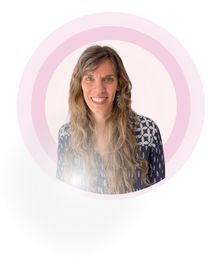

Lic. Patricia Méndez Torterolo
Soy licenciada en Psicología por la Universidad de Buenos Aires, egresada en el 2001.
Comencé mi práctica profesional realizando una concurrencia en el servicio externo de Orientación Vocacional del Hospital Borda.
Me desempeñé varios años el área laboral en selección y reclutamiento de personal en una empresa internacional de recursos humanos.
En esa misma época, trabajé como perito de parte para un estudio de abogados.
Luego me focalicé en el área clínica, donde atiendo hace más de diez años en Olivos.
Soy psicóloga clínica de pacientes con Trastornos de Ansiedad y del estado de ánimo, crisis vitales. Me especializo en adolescentes y adultos.
Realicé estudios de posgrado en Terapia Cognitiva Conductual y cursos de actualización en Instituciones privadas de Bs As. Participé en el Programa de Reducción de Estrés basado en Mindfulness e hice el Curso de Introducción a Mindfulness y Compasión en Psicoterapia.
Hace unos años empecé a interesarme cada vez más por temas de psicología y fertilidad y así poder ayudar y acompañar a las personas que atraviesan dificultades en la reproducción. Decidí especializarme y realicé la diplomatura en Psicología de la Reproducción Humana asistida en Samer. En SAPRHA hice el curso “Revelación de los orígenes e identidad en donación de gametos” y continúo formándome en dicha área y atendiendo pacientes que se encuentran realizando tratamientos de fertilidad.
Junto a mi colega, armamos Bienestar en Fertilidad , donde coordinamos talleres para mujeres que estén realizando tratamientos de fertilidad, para acompañarlas en ese camino y darles herramientas de afrontamiento y contención en ese proceso.

Lic. Patricia Méndez Torterolo

Lic. Cecilia Lukaszewicz
Lic. Cecilia Lukaszewicz
Soy Lic. En Psicología recibida con honores en la Universidad de Buenos Aires en el 2007.
Mientras estudiaba, y unos años después de recibida, me dediqué al área de Recursos Humanos. Pero luego empecé a sentir que atender pacientes y ayudar a otras personas era lo que más me interesaba.
Realicé estudios de posgrado en Terapia Cognitiva Conductual en Instituciones públicas y privadas del país.
Tuve la oportunidad de viajar y realizar formación en Terapia Cognitiva Conductual en “Oxford Cognitive Therapy Centre” acreditado por Universidad de Oxford.
También hice cursos de formación en Terapia de Pareja y una formación introductoria en Psiconeuroinmunoendocrinología.
Me gusta trabajar en ámbitos diversos, por eso ejerzo la psicología desde diferentes espacios:
En mi consultorio atiendo sobre todo pacientes con Trastornos de Ansiedad , trastornos del estado de ánimo, crisis vitales y desarrollo personal.
Además me gusta mucho la docencia y soy parte de cursos de posgrado de terapia cognitiva conductual en diversas instituciones.
También dicto talleres para pacientes con ansiedad social y para psicólogos que recién se inician en la práctica profesional.
En los últimos años empecé a interesarme mucho en el área de Fertilidad, y empecé a notar que quienes encontraban obstáculos en la búsqueda de lograr tener un hijo se sentían muy solos y necesitaban contención y herramientas. Por eso decidí realizar la diplomatura en Psicología de la Reproducción Humana asistida en Samer y continué formándome en dicha área en instituciones nacionales e internacionales, atendiendo pacientes que se encuentran realizando tratamientos de fertilidad.
En el último tiempo, junto a mi colega, decidimos armar “Bienestar en Fertilidad” para poder dictar talleres a mujeres que estén realizando tratamientos de fertilidad, para poder facilitarles herramientas que permiten transitar el proceso de una mejor forma.